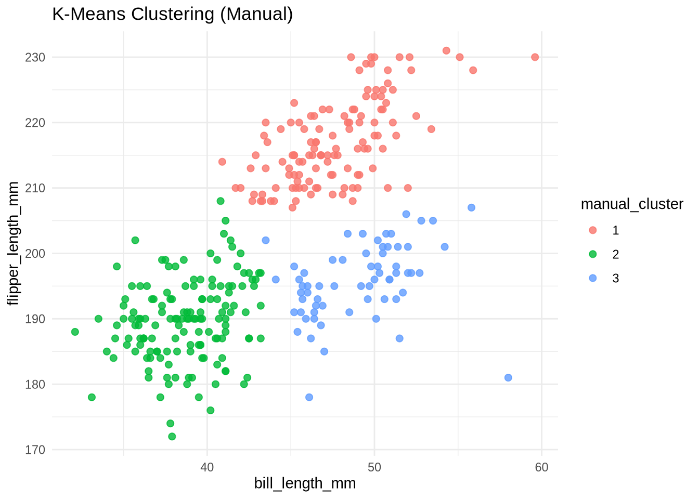
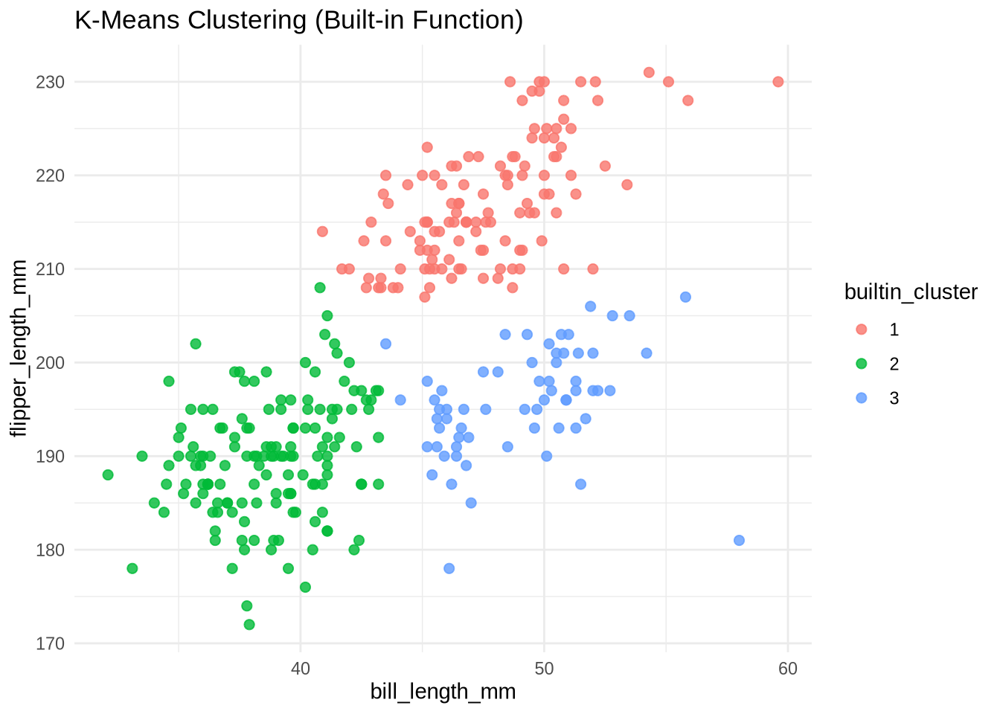
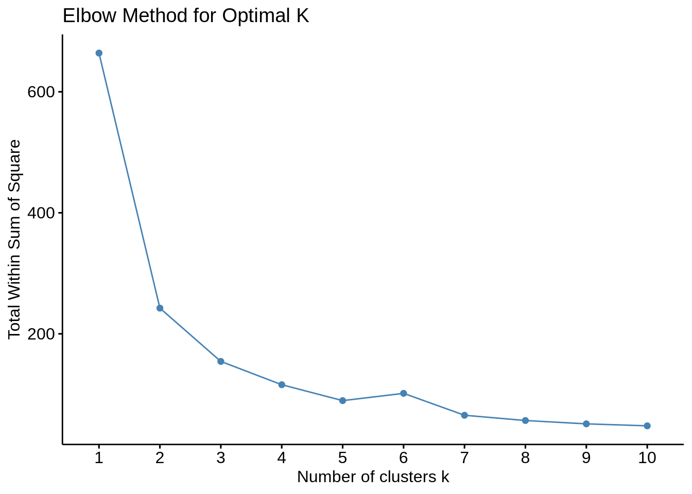
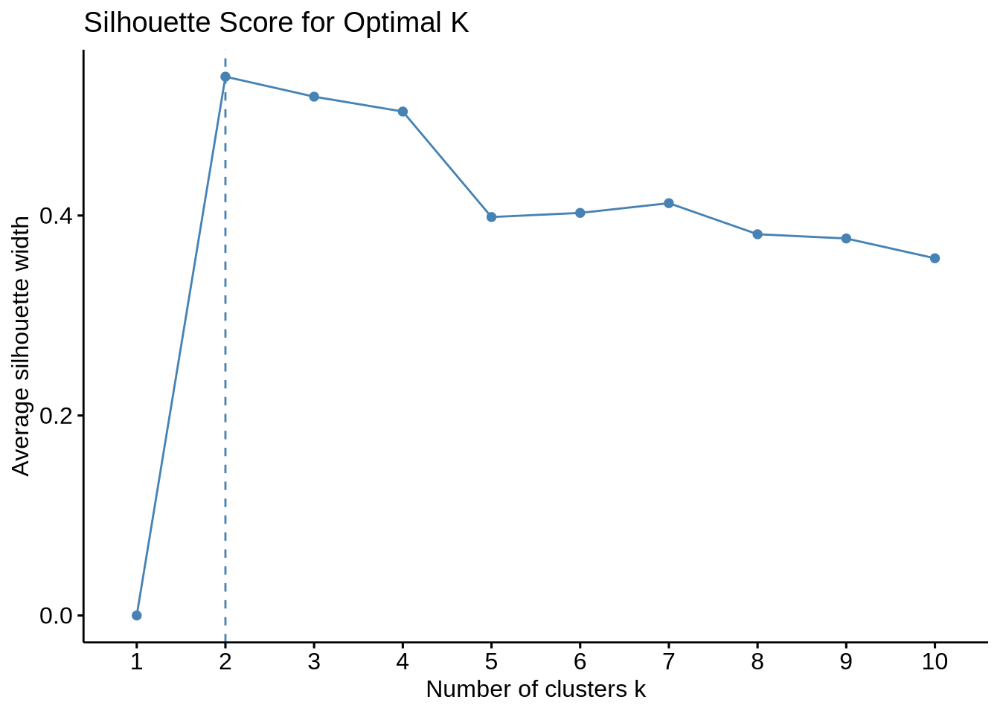
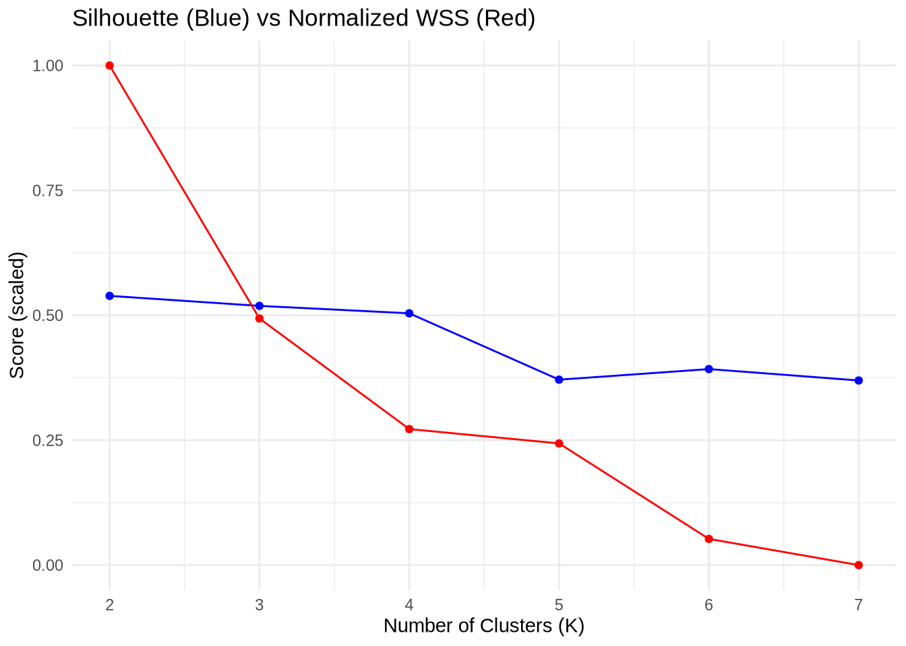

# -------------------------------------------
# 1. Install & Load Required Packages
# -------------------------------------------
install.packages("cluster")Installing package into '/home/jovyan/.rsm-msba/R/4.4.1'
(as 'lib' is unspecified)install.packages("factoextra")Installing package into '/home/jovyan/.rsm-msba/R/4.4.1'
(as 'lib' is unspecified)install.packages("ggplot2")Installing package into '/home/jovyan/.rsm-msba/R/4.4.1'
(as 'lib' is unspecified)library(cluster)
library(factoextra)Loading required package: ggplot2Welcome! Want to learn more? See two factoextra-related books at https://goo.gl/ve3WBalibrary(ggplot2)
# -------------------------------------------
# 2. Load and Preprocess Data
# -------------------------------------------
# Update path if needed:
penguins <- read.csv("/home/jovyan/Downloads/SPRING/Marketing Analytics/MA_demo/mysite/Blog/Project4/palmer_penguins.csv")
# Keep only relevant columns
penguins <- na.omit(penguins[, c("bill_length_mm", "flipper_length_mm")])
# Normalize the data
penguins_scaled <- scale(penguins)
# -------------------------------------------
# 3. Define Manual K-Means Function
# -------------------------------------------
euclidean_dist <- function(a, b) sqrt(sum((a - b)^2))
kmeans_manual <- function(data, k, max_iter = 100) {
set.seed(123)
centers <- data[sample(1:nrow(data), k), ]
for (i in 1:max_iter) {
clusters <- apply(data, 1, function(x) {
which.min(apply(centers, 1, function(y) euclidean_dist(x, y)))
})
new_centers <- sapply(1:k, function(j) colMeans(data[clusters == j, , drop = FALSE]))
new_centers <- t(new_centers)
if (all(abs(new_centers - centers) < 1e-6)) break
centers <- new_centers
}
return(list(clusters = clusters, centers = centers))
}
# -------------------------------------------
# 4. Apply Manual K-Means for K = 3
# -------------------------------------------
result <- kmeans_manual(penguins_scaled, k = 3)
penguins$manual_cluster <- as.factor(result$clusters)
# -------------------------------------------
# 5. Plot Manual K-Means Clusters
# -------------------------------------------
ggplot(penguins, aes(bill_length_mm, flipper_length_mm, color = manual_cluster)) +
geom_point(size = 2, alpha = 0.8) +
ggtitle("K-Means Clustering (Manual)") +
theme_minimal()
# -------------------------------------------
# 6. Compare with Built-in kmeans()
# -------------------------------------------
k_builtin <- kmeans(penguins_scaled, centers = 3)
penguins$builtin_cluster <- as.factor(k_builtin$cluster)
ggplot(penguins, aes(bill_length_mm, flipper_length_mm, color = builtin_cluster)) +
geom_point(size = 2, alpha = 0.8) +
ggtitle("K-Means Clustering (Built-in Function)") +
theme_minimal()
# -------------------------------------------
# 7. Evaluate Optimal K using WSS & Silhouette
# -------------------------------------------
fviz_nbclust(penguins_scaled, kmeans, method = "wss") +
ggtitle("Elbow Method for Optimal K")
fviz_nbclust(penguins_scaled, kmeans, method = "silhouette") +
ggtitle("Silhouette Score for Optimal K")
# -------------------------------------------
# 8. Bonus: Calculate Silhouette Scores for K = 2 to 7
# -------------------------------------------
sil_scores <- numeric()
wss_values <- numeric()
for (k in 2:7) {
km <- kmeans(penguins_scaled, centers = k)
ss <- silhouette(km$cluster, dist(penguins_scaled))
sil_scores[k] <- mean(ss[, 3])
wss_values[k] <- km$tot.withinss
}
# Combine into data frame
k_values <- 2:7
eval_df <- data.frame(
K = k_values,
Silhouette = sil_scores[k_values],
WSS = wss_values[k_values]
)
# Plot custom silhouette and WSS results
ggplot(eval_df, aes(x = K)) +
geom_line(aes(y = Silhouette), color = "blue") +
geom_point(aes(y = Silhouette), color = "blue") +
geom_line(aes(y = (WSS - min(WSS)) / (max(WSS) - min(WSS))), color = "red") +
geom_point(aes(y = (WSS - min(WSS)) / (max(WSS) - min(WSS))), color = "red") +
labs(title = "Silhouette (Blue) vs Normalized WSS (Red)", y = "Score (scaled)", x = "Number of Clusters (K)") +
theme_minimal()